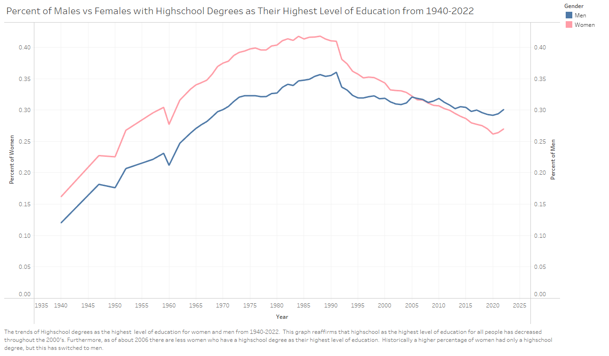
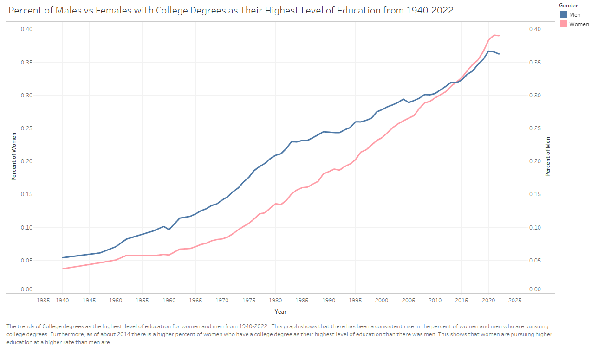
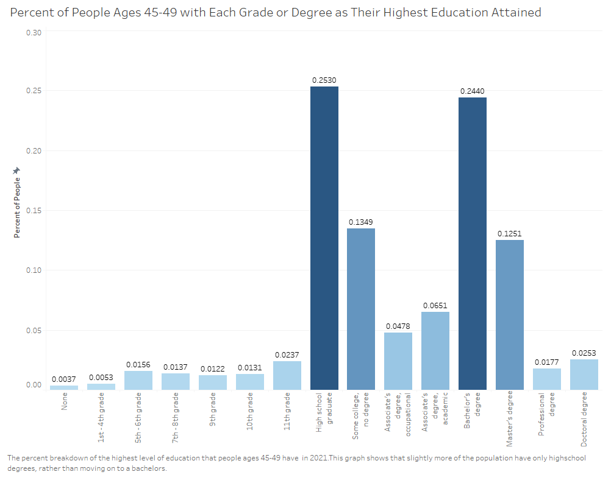
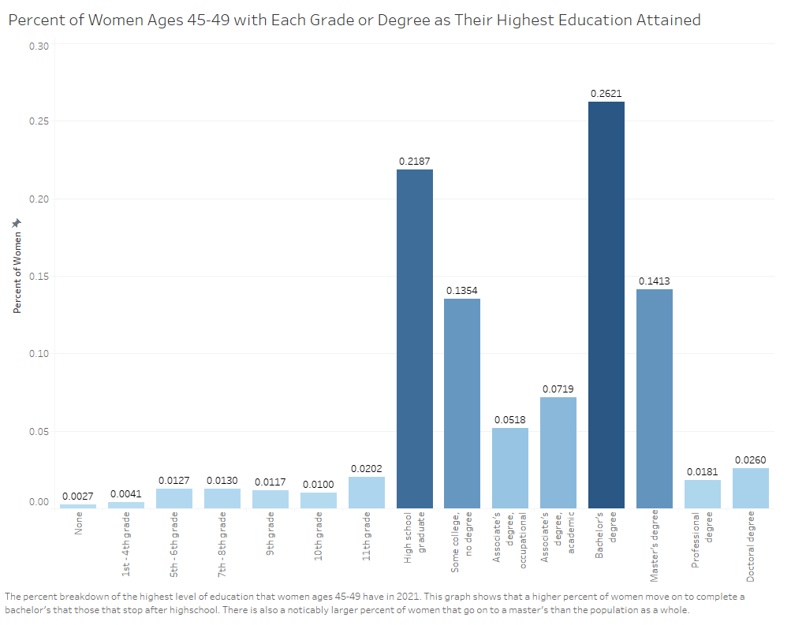
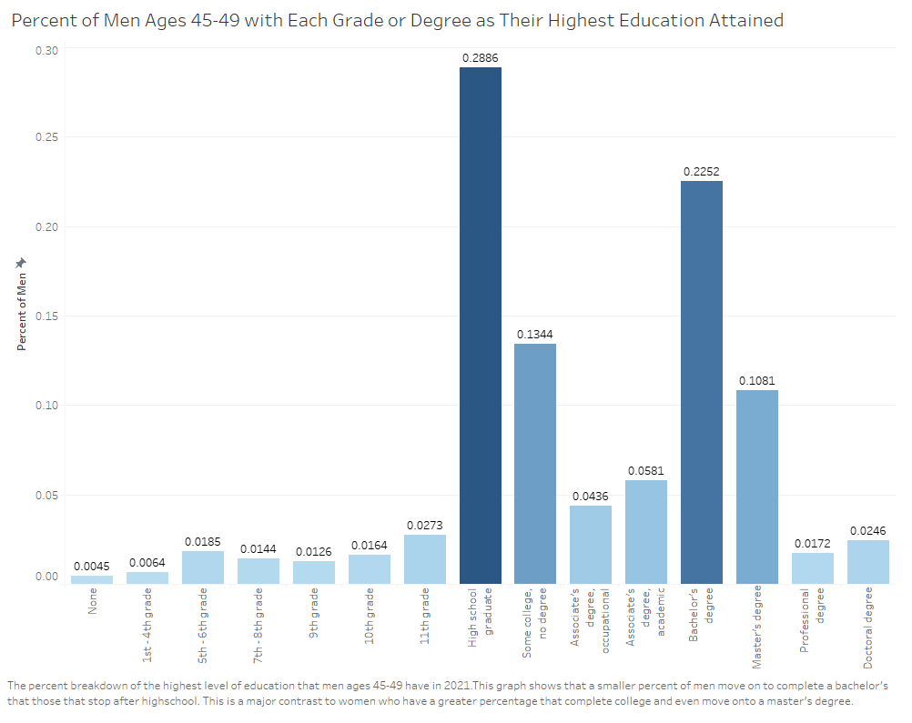
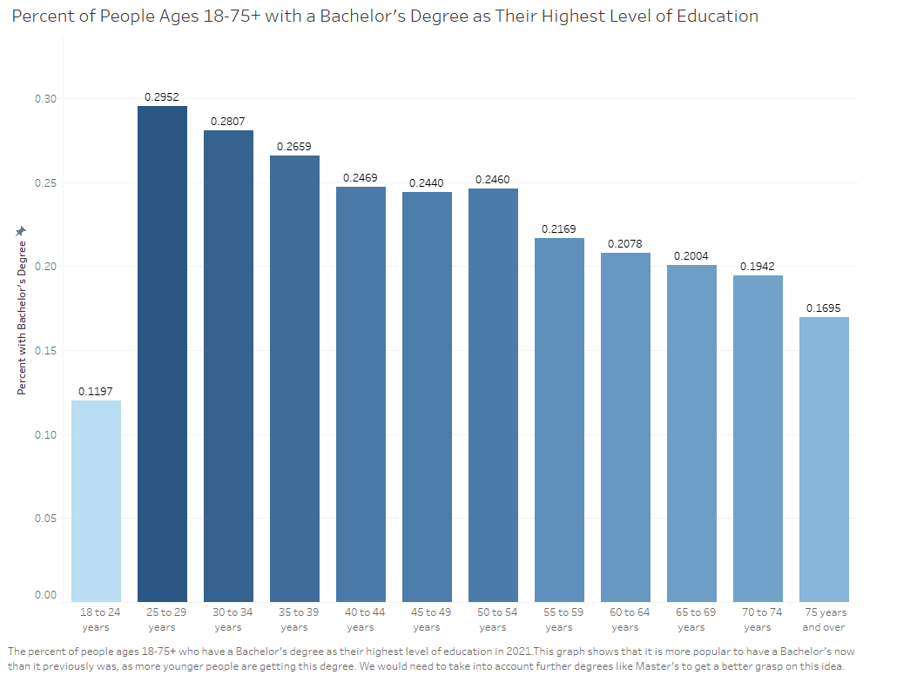
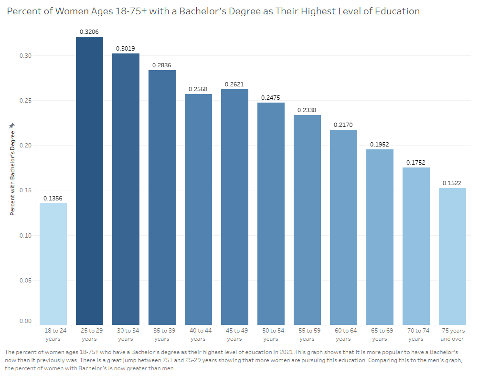
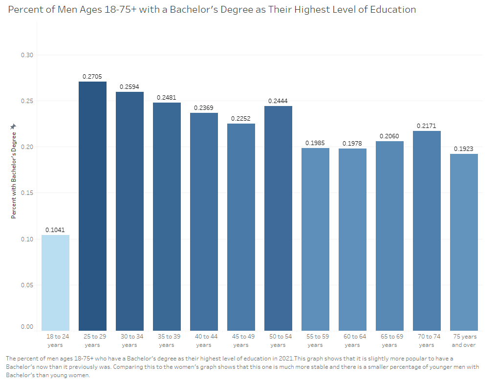
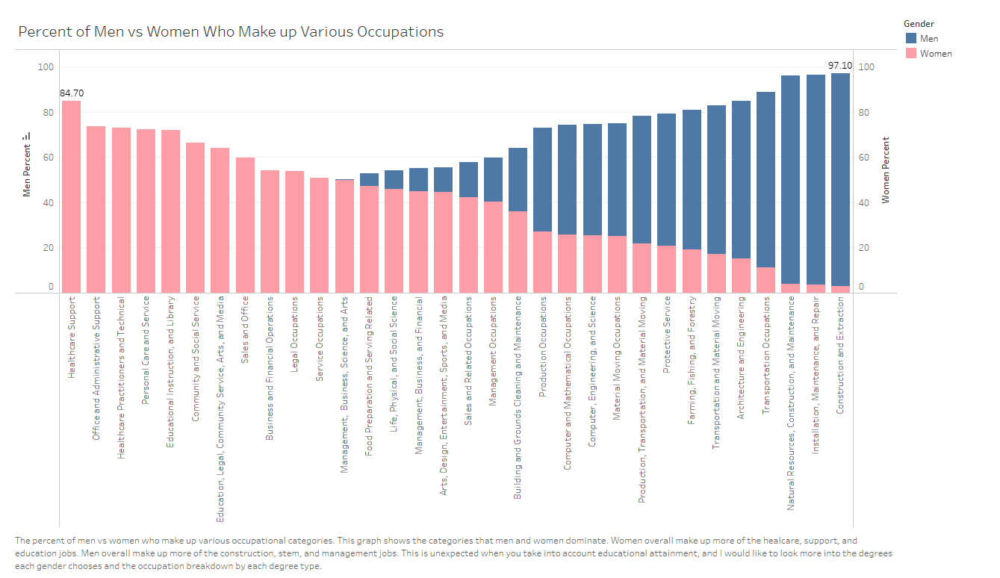

Mia Simpson
The level of education attained by the US population has changed greatly throughout over the past eight decades, reflecting the evolving cultural norms of society. Knowing this, I approached this assignment with the question: How has the level of education changed overtime for women and men? From the post WWII era in the 1940s to the contemporary era of 2022, the country has experienced major shifts in the amount of education that the population pursues. My analysis encompasses this span of time, charting the change in educational achievement from the majority of people stopping after highschool, to now not stopping until after college. I also delve into the same data but split by gender. This data shows that women have surpassed men, with a higher proportion of women obtaining college degrees after highschool. Furthermore, when breaking down the level of education obtained by age in 2021, there is a clear increase in women obtaining higher education, while men stay mostly stable and fall below women. After coming across all of this information, I moved on to analyze what careers men dominate versus the careers that women dominate. This produced unexpected results in men dominating STEM and management fields, while women dominate in support and service positions. Together, these visualizations summarize the dynamic nature of educational attainment in the US, offering insights into the ongoing journey of gender equality in the education and occupational spheres.
Body Text
I was initially interested in this data because I took a sociology class last semester and have seen how societal and cultural norms in the US have shifted overtime. These shifts have allowed women to pursue further education and careers. With this prior knowledge, I wanted to find out just how the population as a whole has changed in terms of education, as well as break that data down by gender.
Initial Questions:
While working with the data on the above questions, many more questions came up:
One aspect of the data that shocked me is that women pursue higher education at a higher rate, while more men are remaining at a highschool degree. Furthermore, men continue to heavily dominate most careers, but especially the STEM careers, even though they are pursuing higher education at a lower rate than women.
The trends of 4+ year College degrees and Highschool degrees as the highest level of education from 1940-2022. This graph shows that going to college after highschool is increasing in popularity and a college degree has become the highest level of education that most people have. College as the highest level of education caught up to highschool in 2011 and has continually risen since.
The trends of Highschool degrees as the highest level of education for women and men from 1940-2022. This graph reaffirms that highschool as the highest level of education for all people has decreased throughout the 2000's. Furthermore, as of about 2006 there are less women who have a highschool degree as their highest level of education. Historically a higher percentage of women had only a highschool degree, but this has switched to men.
The trends of College degrees as the highest level of education for women and men from 1940-2022. This graph shows that there has been a consistent rise in the percent of women and men who are pursuing college degrees. Furthermore, as of about 2014 there is a higher percent of women who have a college degree as their highest level of education than there was men. This shows that women are pursuing higher education at a higher rate than men are.
The percent breakdown of the highest level of education that people ages 45-49 have in 2021.This graph shows that slightly more of the population have only highschool degrees, rather than moving on to a bachelors.
The percent breakdown of the highest level of education that women ages 45-49 have in 2021. This graph shows that a higher percent of women move on to complete a bachelor's that those that stop after highschool. There is also a noticably larger percent of women that go on to a master's than the population as a whole.
The percent breakdown of the highest level of education that men ages 45-49 have in 2021.This graph shows that a smaller percent of men move on to complete a bachelor's that those that stop after highschool. This is a major contrast to women who have a greater percentage that complete college and even move onto a master's degree.
The percent of people ages 18-75+ who have a Bachelor's degree as their highest level of education in 2021.This graph shows that it is more popular to have a Bachelor's now than it previously was, as more younger people are getting this degree. We would need to take into account further degrees like Master's to get a better grasp on this idea.
The percent of women ages 18-75+ who have a Bachelor's degree as their highest level of education in 2021.This graph shows that it is more popular to have a Bachelor's now than it previously was. There is a great jump between 75+ and 25-29 years showing that more women are pursuing this education. Comparing this to the men's graph, the percent of women with Bachelor's is now greater than men.
The percent of men ages 18-75+ who have a Bachelor's degree as their highest level of education in 2021.This graph shows that it is slightly more popular to have a Bachelor's now than it previously was. Comparing this to the women's graph shows that this one is much more stable and there is a smaller percentage of younger men with Bachelor's than young women.
The percent of men vs women who make up various occupational categories. This graph shows the categories that men and women dominate. Women overall make up more of the healcare, support, and education jobs. Men overall make up more of the construction, stem, and management jobs. This is unexpected when you take into account educational attainment, and I would like to look more into the degrees each gender chooses and the occupation breakdown by each degree type.
Body Text